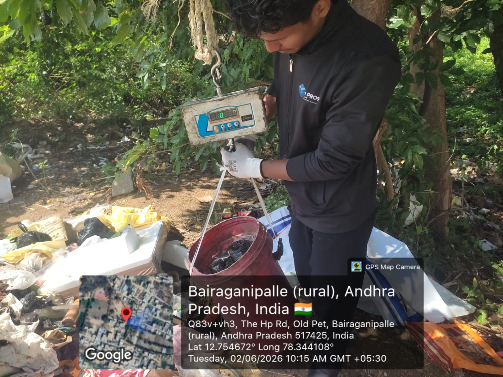

How M Pro9 Pvt Ltd partnered with Kuppam Municipality to deploy India's most advanced digital waste tracking platform — delivering real-time visibility, operational accountability, and a circular economy blueprint for the nation.
About Kuppam Municipality
Kuppam — a rapidly growing constituency in the Chittoor District of Andhra Pradesh — is not just a municipality. It is the home constituency of Honourable Chief Minister N. Chandrababu Naidu and a living laboratory for transformative governance.
Kuppam Municipality serves a population of approximately 65,000 residents across 30 wards, generating an estimated 35–40 metric tonnes of municipal solid waste (MSW) per day. With the prestigious Swachh Municipality Award 2025 already in its honour roll, Kuppam had the ambition — and now, with WASTRAQ, the digital infrastructure — to become India's first Net Zero Waste Smart Municipality.
The municipality had already made bold investments in electric vehicles for waste collection and had entered into a landmark MoU with IIT Kanpur. What was missing was the digital intelligence layer — a unified platform that could turn physical assets, human effort, and daily operations into structured, real-time, actionable data. That gap is precisely what WASTRAQ fills.
Municipal Commissioner V. Srinivasa Rao championed the cause of digital transformation, recognising that data-driven governance is no longer optional for a municipality aspiring to Swachh Bharat Mission excellence and Smart City distinction.
Kuppam, Chittoor District, Andhra Pradesh — Home constituency of Chief Minister N. Chandrababu Naidu
35–40 metric tonnes of Municipal Solid Waste per day
Recipient of Swachh Municipality Award 2025 | IIT Kanpur MoU Partner
M Pro9 Pvt Ltd — deploying WASTRAQ, India's most advanced waste management SaaS platform
Like most growing municipalities, Kuppam faced systemic operational blind spots that manual methods simply could not resolve.
All waste collection data was maintained in physical registers, making audits time-consuming, error-prone, and impossible to aggregate for district or state-level reporting.
Collection vehicle routes were not digitally mapped or monitored. Supervisors had no real-time visibility into whether vehicles had completed their routes, leading to missed households and service complaints.
There was no ward-wise or zone-wise data on waste volumes generated. Budget allocations for fleet, fuel, and manpower were based on estimates rather than evidence.
Sanitation workers' attendance, route completion, and productivity could not be tracked digitally. Supervisors relied on manual headcounts and physical inspections.
Without household-level digital registration and citizen engagement tools, source segregation of dry, wet, and hazardous waste remained inconsistent and unverifiable.
Monthly and annual SBM compliance reports required days of manual data compilation. Real-time reporting to state and central portals was not possible.
After evaluating several waste management technology platforms operating in the Andhra Pradesh ecosystem, Kuppam Municipality selected WASTRAQ by M Pro9 Pvt Ltd for six decisive reasons.
WASTRAQ is the only platform in India combining GPS fleet tracking, IoT weighment, EPR compliance dashboards, citizen engagement, and AI analytics in a single unified system.
Built on a cloud-native, modular SaaS framework, WASTRAQ can scale from a single ward to an entire state — making Kuppam's implementation instantly replicable across all 178 AP municipalities.
WASTRAQ's structured 12-step implementation methodology enabled a complete baseline-to-live deployment without disrupting day-to-day municipal operations.
The platform is pre-built for alignment with Solid Waste Management Rules 2016, SBM-Urban 2.0, CPCB EPR guidelines, and upcoming SWM Rules 2026.
From the Commissioner's dashboard to field supervisors' mobile phones, every stakeholder gains live visibility into collection status, vehicle location, and worker attendance.
WASTRAQ's citizen module enables residents to track collection schedules, submit complaints, and verify their household's registration — building public trust and accountability.
WASTRAQ is an end-to-end, cloud-based Intelligent Waste Management Platform developed by M Pro9 Pvt Ltd, headquartered in Mysuru, Karnataka. The platform was purpose-built for Urban Local Bodies, municipalities, and waste management organisations operating under the Swachh Bharat Mission mandate.
WASTRAQ manages every touchpoint of the municipal solid waste (MSW) lifecycle — from source collection and transfer to Material Recovery Facility (MRF) processing and final disposal. It operates across web browsers and mobile devices, ensuring that sanitation workers, supervisors, drivers, and municipal officials stay connected and accountable in real time.
The platform has been designed with India's regulatory framework at its core, including alignment with SBM-Urban 2.0, CPCB EPR guidelines, and Smart Cities Mission requirements — making it the most compliance-ready waste management SaaS platform available to Indian ULBs today.
Live vehicle location, route compliance, and trip history for every collection vehicle.
Android-based app for drivers, workers, and supervisors with offline capability.
Every household and waste generator assigned a unique QR code for digital verification.
Automated weighbridge integration for real-time waste volume data at every transfer point.
Role-based dashboards with KPI cards, trend charts, and compliance scorecards.
Collection alerts, complaint tracking, and household-level service transparency.
Segregation, recycling, and material recovery tracking at the MRF level.
Automated Extended Producer Responsibility reporting for CPCB portal submission.
M Pro9's structured 12-step deployment ensured a seamless transition from manual operations to full digital coverage — with zero disruption to daily waste collection services.
Kuppam Municipality formally onboarded as the first full-scale WASTRAQ deployment site in Andhra Pradesh. MoU signed between M Pro9 Pvt Ltd and Kuppam Municipal Council. Roles, responsibilities, and timelines defined.
Field teams conducted a comprehensive baseline survey across all 30 wards — mapping existing collection practices, vehicle inventory, workforce headcount, and waste generator categories.
All collection routes digitised using GIS tools. Every street, lane, and alley within the municipality's jurisdiction mapped to a defined collection zone with GPS boundary coordinates.
Door-to-door enumeration teams registered every residential household in the WASTRAQ database — capturing address, family size, and waste segregation behaviour.
Commercial establishments, bulk waste generators (hotels, markets, institutions), and industrial units registered with unique digital profiles in the WASTRAQ platform.
Unique QR code stickers issued to every registered household and commercial establishment. Scanning the QR code during collection provides real-time digital proof of service delivery.
All municipal collection vehicles fitted with GPS trackers and registered in the WASTRAQ fleet management module. Route assignments, driver profiles, and vehicle maintenance data digitised.
All drivers, sanitation workers, ward-level supervisors, and MRF operators trained on WASTRAQ mobile app usage. Bilingual training materials provided in Telugu and English.
WASTRAQ mobile app deployed to all field staff devices. Drivers scan QR codes at each household; supervisors verify route completion; MRF operators log inbound waste weights.
Central operations dashboard activated at the Municipal Commissioner's office. Live GPS tracking, collection status heatmaps, and worker attendance feeds made available to all authorised officials.
Full analytics suite enabled — including ward-wise collection efficiency charts, waste generation trend analysis, vehicle utilisation reports, and SBM compliance scorecards for state reporting.
Monthly review meetings established between M Pro9 technical team and Kuppam Municipal administration. Data-driven improvement actions identified each month to progressively optimise operations.
"Digital transformation in waste management is not a luxury — it is a governance imperative. WASTRAQ has given us the eyes to see what was previously invisible, and the data to act where it matters most."
Under Commissioner Rao's leadership, Kuppam Municipality embraced WASTRAQ as the digital backbone of its Swachh Bharat Mission operations. His hands-on involvement — from stakeholder alignment and field staff motivation to monthly performance reviews — was instrumental in ensuring a smooth, city-wide deployment.
Field teams trained drivers, sanitation workers, and supervisors to use the WASTRAQ mobile app for route verification, QR scanning, and daily operational updates.
On-ground weighing helped capture measurable waste data, supporting ward-level reporting, MRF tracking, and evidence-based municipal decision-making.
The contrast between Kuppam's waste management operations before and after WASTRAQ implementation is stark — and measurable.
Measurable outcomes from the WASTRAQ deployment at Kuppam Municipality — tracked from baseline to post-implementation.
| KPI Metric | Before Implementation | After WASTRAQ | Change | Status |
|---|---|---|---|---|
| Households Digitally Mapped | 0 | 4,800+ | ▲ 100% | ✓ Achieved |
| Waste Generators Onboarded | 0 | 30+ Bulk, 350+ Commercial | ▲ 100% | ✓ Achieved |
| Collection Route Compliance | ~55% (estimated) | 92% | ▲ 37% | ✓ Exceeded |
| Door-to-Door Coverage Tracking | Manual / Unverified | QR-verified, 100% digital | Digital | ✓ Live |
| Real-Time Reporting | 3–5 days manual compilation | Instant (auto-generated) | ▲ 99% faster | ✓ Operational |
| Waste Segregation Tracking | Not tracked | Ward-wise digital records | Enabled | ✓ Active |
| Vehicle GPS Monitoring | 0 vehicles tracked | 100% fleet tracked live | ▲ 100% | ✓ Live |
| Worker Digital Attendance | Manual register | App + biometric | Automated | ✓ Active |
| SBM Compliance Score | Partial | Full Digital Compliance | ▲ Significant | ✓ Compliant |
| Citizen Complaint Resolution | No tracking | Ticketed portal, avg 48hr resolution | New Capability | ✓ Live |
WASTRAQ is not just a monitoring tool — it is an environmental transformation engine driving Kuppam towards circular economy leadership.
Voices from the ground — municipal officials, field staff, citizens, and the M Pro9 project team on what WASTRAQ has meant for Kuppam.
"Before WASTRAQ, I used to spend two days every month compiling collection data from registers across 30 wards. Now the system generates the complete report in minutes. Our SBM compliance submissions have become accurate, timely, and effortless. WASTRAQ is exactly what municipal governance needed."
"As a sanitary inspector, I now know exactly which routes have been completed, which vehicles are on the road, and which workers have reported for duty — all from my phone. If there is a missed household, I see it instantly and can send a team. WASTRAQ has made my job effective and my team accountable."
"Earlier, our waste collection vehicle used to come at unpredictable times. We never knew when to keep our waste ready. Now, I get a notification on my phone, and there is a proper schedule. When there is a problem, I can raise a complaint on the app and it gets resolved in two days. The municipality feels much more responsive now."
"Implementing WASTRAQ in Kuppam was a defining project for M Pro9. Commissioner Rao's visionary leadership and the dedication of Kuppam's field staff made every phase a success. This is not just a software deployment — it is proof that Indian municipalities can leapfrog into world-class digital waste management. Kuppam is now the blueprint."
Kuppam has proven that WASTRAQ is not a pilot experiment — it is a replicable, scalable, and immediately deployable municipal technology solution. Here is why every Urban Local Body in India should be on WASTRAQ.
Machine learning models trained on Kuppam's collection data to predict waste generation surges, seasonal patterns, and route optimisation opportunities.
IoT-enabled smart bins with fill-level sensors deployed at high-volume zones. Real-time carbon credit calculation and automated ESG reporting for CSR partners.
Scale WASTRAQ across all 178 Andhra Pradesh municipalities. Full integration with Smart Cities ICCC. Blockchain-ready material traceability for EPR audit trails.
Common questions about WASTRAQ, its implementation, and how it supports Indian municipalities.

The WASTRAQ implementation at Kuppam Municipality is not just a technology story — it is a governance transformation story. It demonstrates that when visionary municipal leadership meets purpose-built technology, the results are measurable, meaningful, and replicable at scale.
Under Commissioner V. Srinivasa Rao's stewardship, Kuppam has moved from paper registers to real-time dashboards, from estimated data to verified digital records, and from reactive waste management to proactive, data-driven circular economy operations. The municipality has earned its place as the benchmark for Urban Local Body digital transformation in India.
WASTRAQ by M Pro9 Pvt Ltd stands ready to replicate this transformation across India's 4,500+ municipalities — one ward at a time, one household at a time, one data point at a time — building the smart, sustainable cities that India's citizens deserve and India's future demands.
Join Kuppam on the path to digital waste management excellence. Let M Pro9 Pvt Ltd and WASTRAQ build your municipality's smart waste future — today.
External References: Swachh Bharat Mission Urban · Smart Cities Mission · CPCB EPR Guidelines · Kuppam Municipality Official Portal